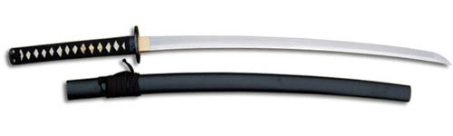

ESPADAS
La espada es un arma blanca de dos filos que consiste básicamente en una hoja recta cortante, punzante —o con ambas características—, con empuñadura, y de cierta envergadura o marca (marca: aproximadamente a partir de medio metro). Según la definición estricta no serían espadas los sables, las katanas (sable japonés), etc.
Tienen su hoja metálica afilada en uno o los dos filos si es de tajo, o sin filos y con puntas agudas y duras si es de punzar, o con ambas características. La empuñadura se hacía de muchos y diversos materiales, sobre todo si eran espadas para "ceñir" o de "parada" aristocráticas, pero se solía emplear la madera o cuerno recubiertos —o no— de cuero o cordelería.
Historia
Siendo su aparición muy temprana (IV milenio a. C.), su hoja se hizo inicialmente de cobre (muy débil), posteriormente de bronce, hierro y finalmente acero templado. La factura y el manejo de la espada permanecen constantes a lo largo de los siglos, pero las técnicas varían entre culturas y periodos como resultado de las diferencias en el diseño y propósito de la hoja. Los nombres dados a muchas espadas en la mitología, literatura e historia reflejan el alto prestigio del arma (ver listado de espadas).
Etimologia
La palabra espada proviene del latín spatha (que también sirvió para denominar a la espada larga y recta romana de caballería), y esta, a su vez del griego spathe. Etimológicamente el nombre permanece hoy día en el francés como épée, y en el italiano como spada.